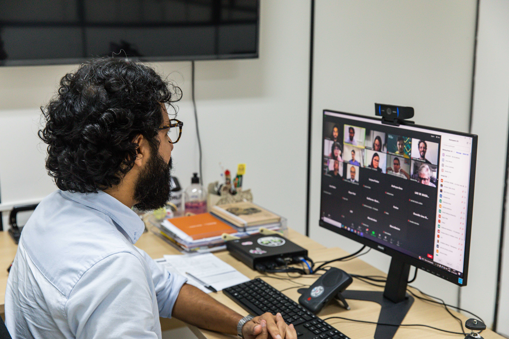

INÍCIO
SOBRE
ATENDIMENTO
TRANSPORTES
TRÂNSITO
COMUNICAÇÃO
EDUCAÇÃO
PLANEJAMENTO
ESTE MATERIAL TRATA-SE DE UM TRABALHO ESCOLAR NÃO É O SITE REAL DA EMPRESA

Prefeitura inicia consulta pública para Programa de Segurança Viária do Recife
Recife inicia parceria internacional para fiscalização em segurança viária
Heróis da Liga da CTTU estarão nos polos infantis para orientar pais e crianças sobre segurança viária.